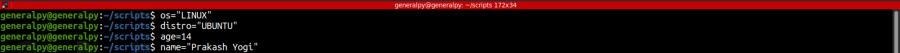
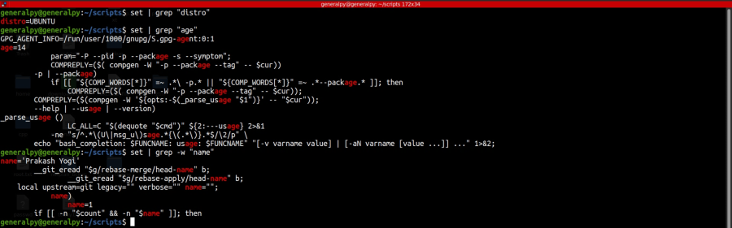
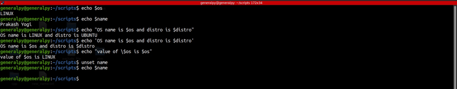
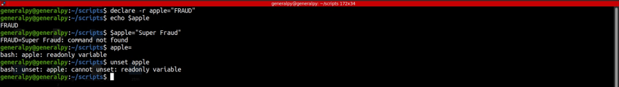
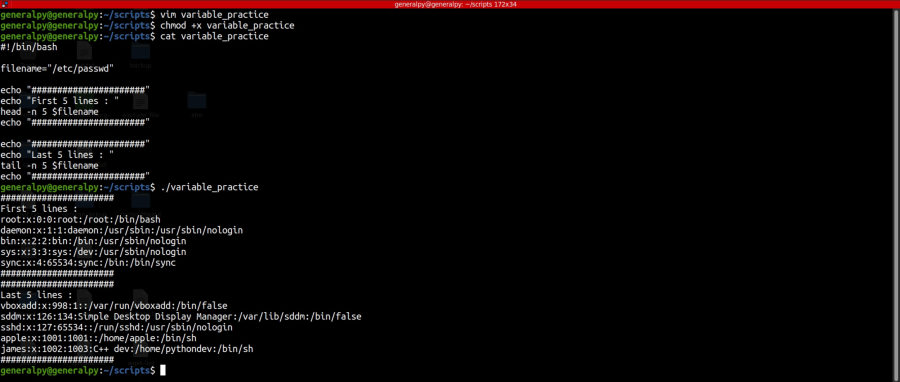

Variable are names for memory locations that can be used in our script for different purposes.
Syntax to declare a variable is :
name=valueThere cannot be any space between name , = and value. There are some rules regarding naming of variables.
Variable names cannot start with number, they cannot contain special characters like dot(.), @ , & etc tho _ is allowed. Some valid name examples are :
you4, _apple, Apple etc.
There is no concept of data types for variables in bash so we don't have to declare variables beforehand with their data type. Two type of data that can be assigned to variables are string and integer. There is no floating point numbers in bash.
To list all variables and functions defined in current session, use set command.


Assigning a value to a variable is known as assignment, whereas getting its value is known as referencing a variable.
To reference a variable, just add $ before its name. We can also use this inside double quoted strings. Single quoted strings return raw string.
We can use \ before the variable name if we want to remove effects of $.
To delete a variable use unset command followed by variable name.

We can declare constant variables by using declare command with -r flag which stands for readable. Constant variables cannot change their values and the cannot be deleted.

Default shell variables which are provided with os and shell are named in all upper case. PATH, HOME, HISTFILE etc are examples of built in variables.
Lets create a simple script using variables.
#!/bin/bash
filename="/etc/passwd"
echo "######################"
echo "First 5 lines : "
head -n 5 $filename
echo "######################"
echo "######################"
echo "Last 5 lines : "
tail -n 5 $filename
echo "######################"
